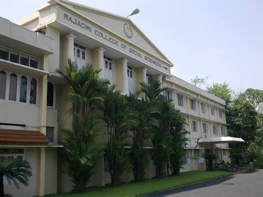

Rajagiri College of Social Sciences (RCSS), together with its sister educational concerns, owes
its existence to the CMI (Carmelites of Mary Immaculate) fathers, the first ever indigenous religious congregation
for men in the Syrian Catholic tradition of Christianity in India. The CMIs drawing inspiration from their founding father St. Kuriakose Elias Chavara,
a great visionary, reformer and religious leader of the 19th century, have proven themselves worthy of that heritage in the field of education by establishing
institutions of excellence imparting quality education.across the length and breadth of the State, and in various parts of India. At present, the CMIs manage a
network of more than 800 Schools, 13 Special Schools, 41 Arts, Science, Commerce & Physical Education Colleges, 10 B.Ed. Colleges, 4 Nursing Colleges, 4 Engineering
Colleges, one Medical College, one University, 3 Law Colleges, 6 Research Centres, 7 Technical Institutes, 41 Hostels & Boarding Houses, 17 Cultural Centres, 2 Super
Speciality Hospitals and 114 Non-formal Education Centres.